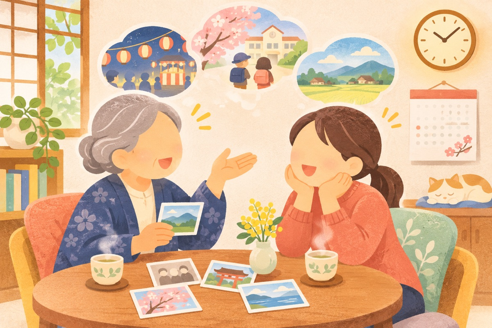

3つの探し方
年齢・年・年代から、その場にぴったりの時代を選べます。
懐かしい話から、会話が始まる。
年齢・年・年代を選ぶだけ。青春時代の流行や出来事が、飲み会、同窓会、家族の集まりを自然に盛り上げます。

この曲、覚えてる？ 放課後どこに寄ってた？すぐに、みんなで
アカウント登録は不要。1台のiPhoneを囲んで、カードをめくるように楽しめます。
年齢・年・年代から、その場にぴったりの時代を選べます。
思い出を引き出す問いかけがあるから、初対面でも話を広げやすい設計です。
気になった話題は端末内に保存して、次の集まりでも使えます。
7つのジャンル
こんな集まりに
iPhoneで近日公開